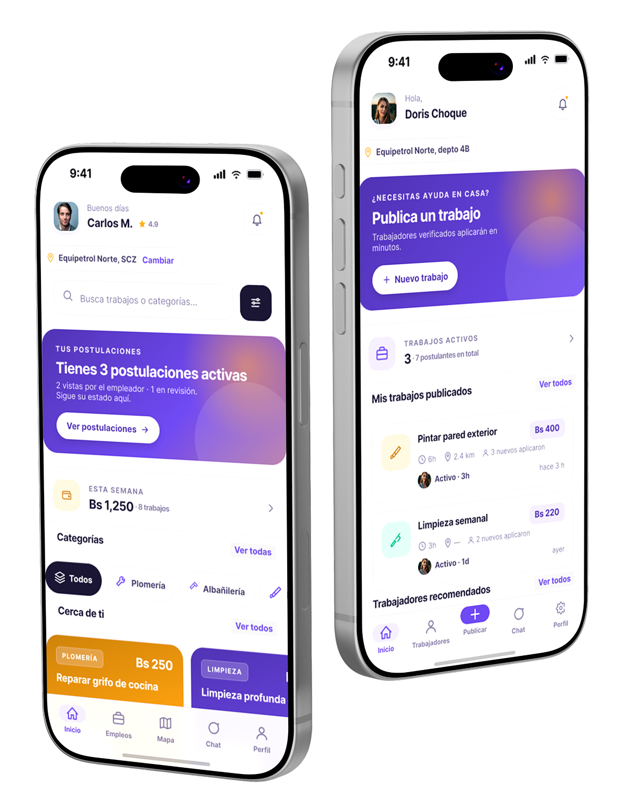
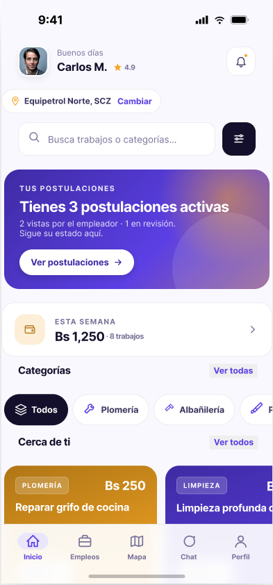
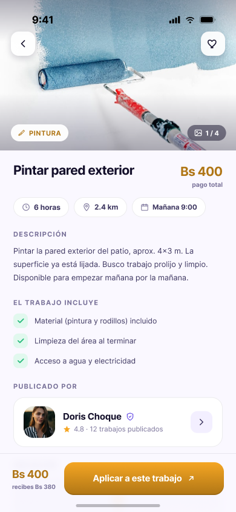
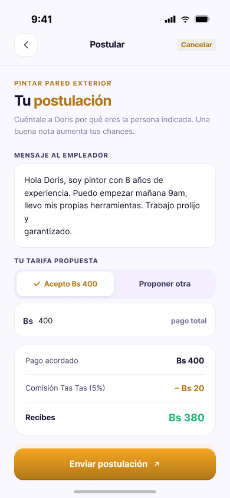
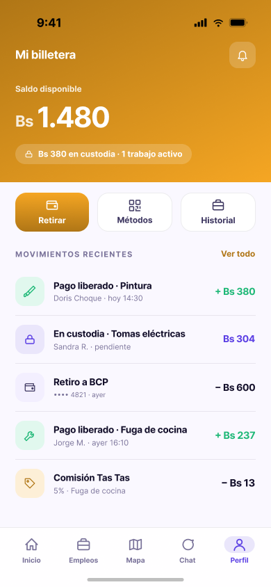
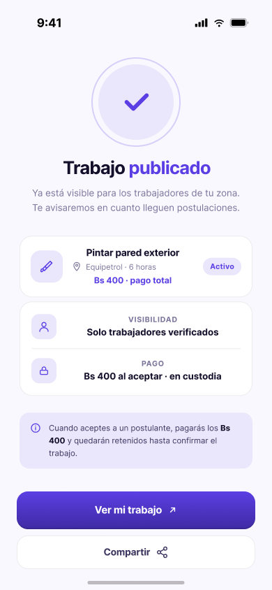
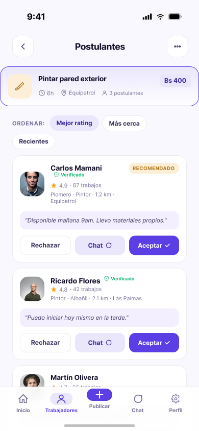
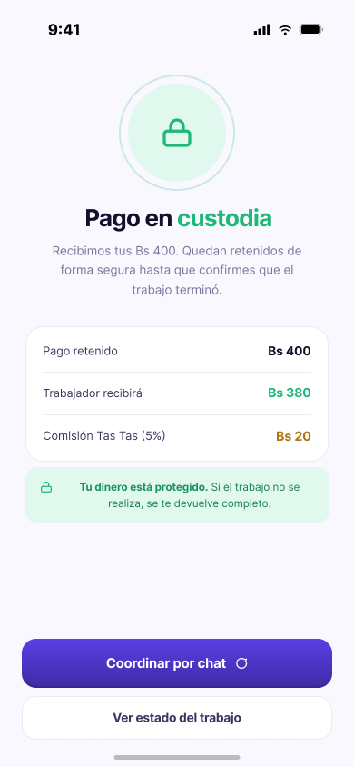
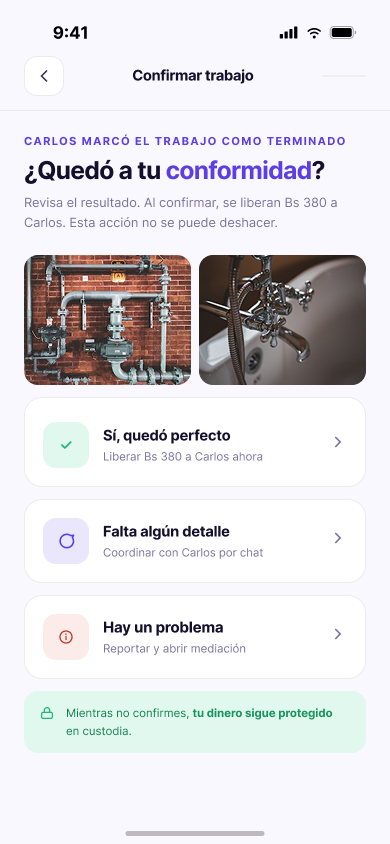

Tas Tas
Tas Tas
Infraestructura de confianza para el trabajo informal
Diseñé el producto completo: investigación, arquitectura de 14 flujos, 77 pantallas y sistema de diseño en Figma para una app que conecta empleadores con trabajadores verificados mediante pago en custodia.
Rol
Product Designer
End-to-end · Solo
Tipo
App Móvil
iOS · Android
Alcance
77 pantallas
14 flujos · 2 roles

Probar prototipoEn Bolivia, el mercado de servicios por oficio es masivamente informal. El empleador no sabe a quién está dejando entrar a su casa. El trabajador no sabe si le pagarán al terminar. Sin un tercero que garantice la operación, la desconfianza bloquea el mercado.
Los compradores B2B evalúan proveedores en minutos — en el mercado laboral informal ocurre lo mismo. Sin plataforma, sin historial, sin verificación, los trabajadores con décadas de experiencia quedan fuera de esa ecuación desde el inicio.
Doble desconfianza
El empleador teme por su seguridad y la calidad del trabajo. El trabajador teme no cobrar. Sin garantía para ambos, muchos tratos no se concretan.
Trabajadores sin vitrina digital
Muchos trabajadores de oficio solo tienen el boca a boca: canal invisible, sin alcance, sin reputación acumulable. La experiencia de toda una vida no se traduce en oportunidades.
Reputación no portable
Un trabajador excelente no puede demostrar su trayectoria fuera de su círculo. Cada cliente nuevo empieza de cero.
Un solo mecanismo resuelve los dos miedos simultáneamente: el trabajador sabe que el dinero existe antes de empezar; el empleador sabe que no se libera hasta que apruebe.
Empleador publica el trabajo
Incluye descripción, categoría, pago (ej. Bs 1.000) y ubicación.
Trabajadores postulan
El empleador revisa perfiles, reseñas y experiencia antes de decidir.
Pago por QR al aceptar
El empleador paga Bs 1.000 en el momento de aceptar. Los fondos quedan bloqueados en custodia.
El trabajador ejecuta
Coordina por chat, realiza el trabajo y lo marca como terminado.
Empleador confirma conformidad
Solo entonces se libera el pago. Si hay disconformidad, se abre mediación con los fondos aún retenidos.
Pago liberado + reseñas
Bs 950 al trabajador · Bs 50 comisión Tas Tas (5%). Reseñas bidireccionales habilitadas: la reputación refleja solo transacciones reales.
Cada rol tiene codificación cromática propia. En cualquier pantalla se puede leer de un vistazo de quién es la acción.
Mapeé el mercado informal boliviano, identifiqué los dolores de ambos roles y definí la propuesta de valor central: custodia como solución a la doble desconfianza.
14 flujos completos en FigJam antes de abrir Figma. Las decisiones difíciles (postulantes rechazados, mediación, reseñas) se resolvieron en diagramas.
Design system en Figma con variables y tokens por rol. Luego las 77 pantallas sobre esa base sistemática — no pantallas sueltas.
Dos prototipos interactivos en HTML — el flujo principal y el onboarding del trabajador — para validar la navegación sin depender de Figma.
Las decisiones difíciles se resuelven en diagramas, donde cambiar cuesta minutos. No en pantallas, donde cuesta horas.
Ciclo completo
Publicar → postular → pagar → ejecutar → confirmar → reseñar.
Registro trabajador
Onboarding en 8 pasos con verificación institucional.
Postular a trabajo
El corazón del lado trabajador.
Publicar trabajo
Flujo guiado de 7 pasos para el empleador.
Gestionar postulantes
Con las decisiones sobre postulantes no elegidos.
Pago en custodia
El núcleo del producto. Ambos roles.
Reseñas bidireccionales
Solo habilitadas tras la liberación del pago.
Mensajería
Chat con coordinación integrada. Ambos roles.
Variables y tokens en Figma con colecciones por rol. Cada color comunica quién realiza la acción — la codificación es parte del diseño de información.
Paleta por rol
#5D2EE5 — Violeta marca
Color institucional. UI base, botones primarios, confianza.
#FFB800 — Ámbar trabajador
Todo lo que pertenece al rol trabajador. Energía, acción.
#7C6CFF — Violeta empleador
Acciones e interfaces del empleador. Tono más suave.
#1FB877 — Verde custodia
Dinero y estados de pago. Universalmente: seguro.
#0E0B1E — Fondo oscuro
Violeta muy oscuro, no negro puro. Más cálido.
Tipografía
Display / Títulos / UI
Plus Jakarta Sans
400 / 600 / 700 / 800 — Toda la interfaz
Monoespaciado — solo para montos
JetBrains Mono
Exclusivo para Bs 950, Bs 1.000. Los números de dinero tienen su propia tipografía.
Escala de espaciado (4–32px)
Exportaciones de Figma en proceso. El prototipo interactivo ya es navegable.

Explorar trabajos

Detalle de trabajo

Postulación

Billetera

Publicar trabajo

Gestionar postulantes

Pago QR custodia

Confirmar conformidad
Los 14 flujos se definieron y validaron antes de abrir Figma. Las decisiones difíciles se resolvieron en diagramas, donde cambiar cuesta minutos.
Eliminar el modo push del MVP fue una decisión de foco. Mejor un flujo impecable que dos mediocres. El scope recortado concentra el valor.
Mover el pago al momento de aceptar cambia la psicología de toda la transacción. "Tu dinero está protegido" comunica un estado emocional, no un dato financiero.
Solo se puede reseñar después de que el pago se libera. La reputación del sistema no se puede fabricar — solo ganar.
Vacío, carga, error, sin conexión y verificación pendiente se diseñaron como un flujo transversal. No como parches al final del proceso.
Dos prototipos navegables en HTML — el flujo principal y el onboarding del trabajador. Sin Figma, sin restricciones de visualización.
Ver onboarding del trabajador · Requiere JavaScript habilitado